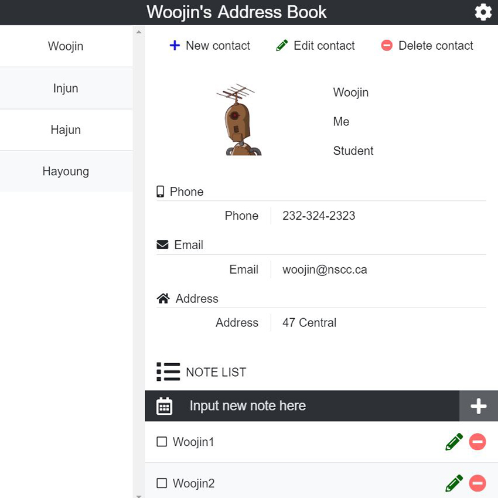
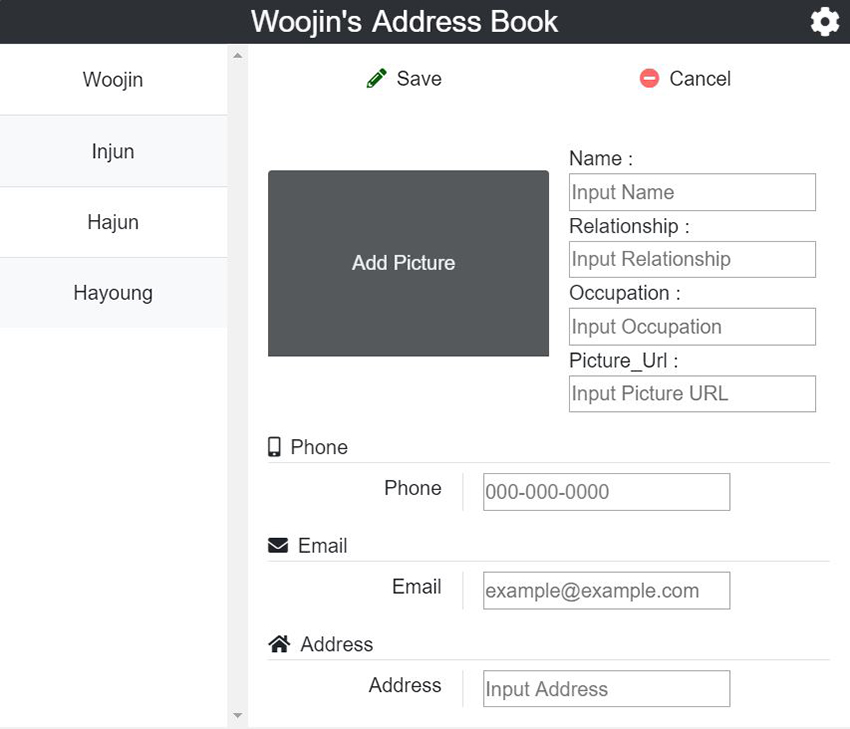
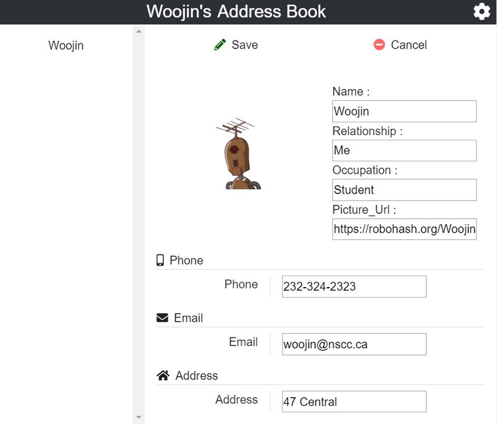
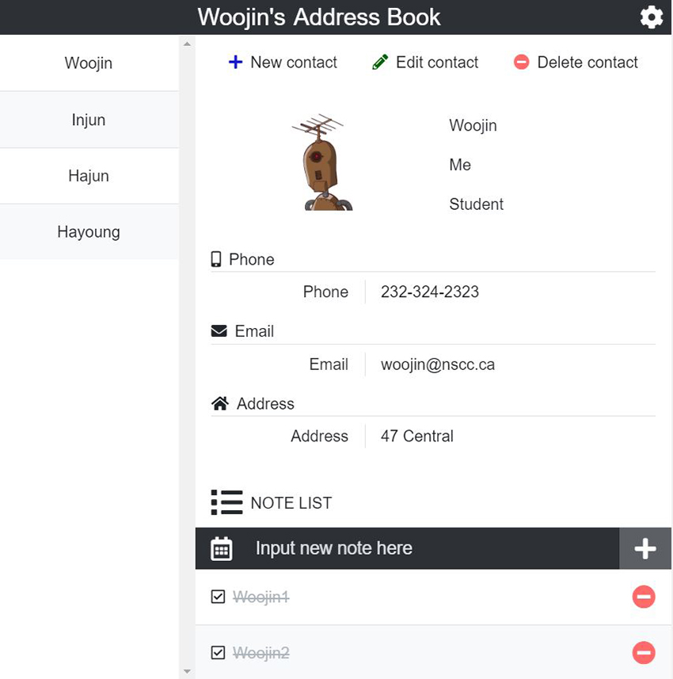
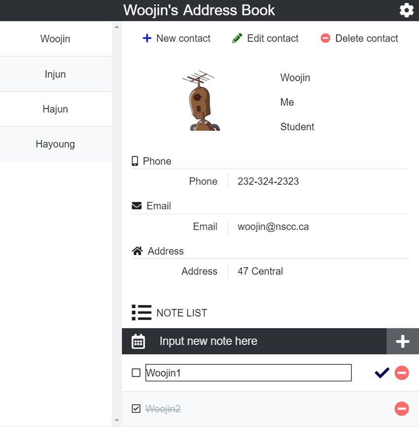
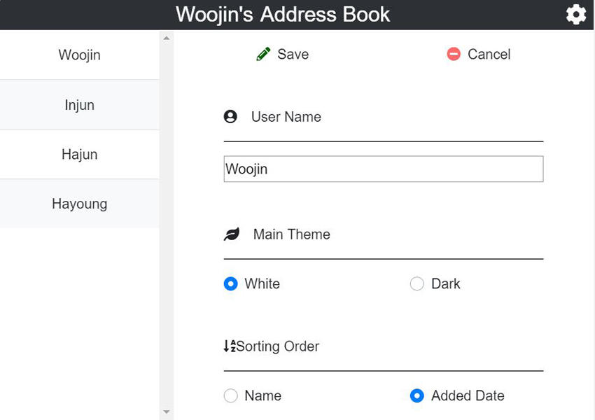
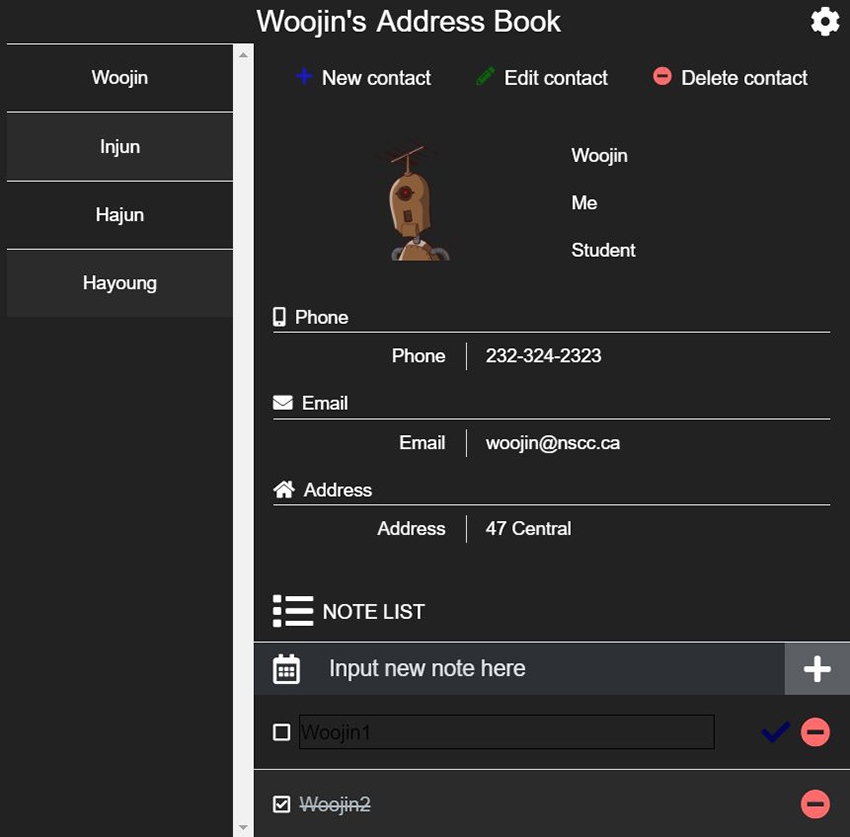

INFT4000 - Electron.js
Address Book Application
This application is a simple but powerful address book application.
This application was created using Electron technology based on JavaScript. And database management is done using sqlite3.
Through this application, user can save and search various information about user’s friends or family. The information includes name, relationship, organization, telephone number, email, address, picture, and so on.
It is also possible to register / modify / delete ‘Notes’ for each registered contact individually.
This feature allows the user to manage information about acquaintances and schedule management by storing tasks to be done with the person.
Site Functionality
1. Contact information management
- All information about contacts and notes will be displayed on the main page.
- The user can add new contacts through the ‘New contact’ menu. This contact includes name, relationship, organization, phone number, email, address, and photo.
- The user can modify the entered contact information through the ‘Edit contact’ menu. All information such as name, relationship, organization, phone number, email, address, and photo can be modified.
- The user can delete the registered contact information through the ‘Delete contact’ menu.



2. Notes management
- The user can create ‘Notes’ for each registered contact. Enter the contents in the 'Input something to do' input box in the 'Notes' area and press the '+' button to add an item.
- If user press the ‘edit button’, user can edit the contents by item.
- If user press the ‘delete button’, user can delete the contents by item.
- Click the check box or the content of the completed item and then that task will be completed with a strikethrough.


3. Preferences management
- The user can register / modify user name via the setting menu.
- The user can also change the site's style mode. Two modes are currently supported: white and dark.
- The sort order of the contact list can also be set via the setting menu.
- Configuration values are stored in an external file.

